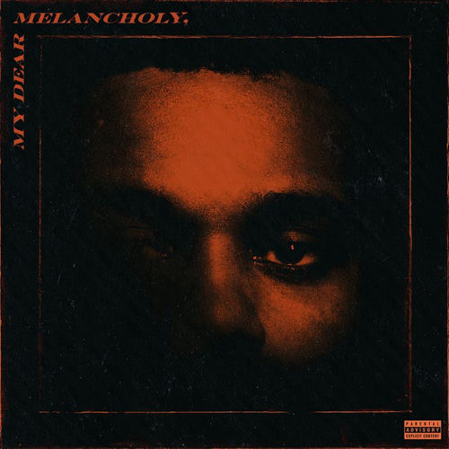

We found each other
I helped you out of a broken place
You gave me comfort
But falling for you was my mistake
I put you on top, I put you on top
I claimed you so proud and openly
And when times were rough, when times were rough
I made sure I held you close to me
So call out my name (call out my name)
Call out my name when I kiss you so gently
I want you to stay (I want you to stay)
I want you to stay, even though you don't want me
Girl, why can't you wait? (Why can't you wait, baby?)
Girl, why can't you wait 'til I fall out of love?
Won't you call out my name? (Call out my name)
Girl, call out my name, and I'll be on my way and
I'll be on my
I said I didn't feel nothing baby, but I lied
I almost cut a piece of myself for your life
Guess I was just another pit stop
'Til you made up your mind
You just wasted my time
You're on top, I put you on top
I claimed you so proud and openly, babe
And when times were rough, when times were rough
I made sure I held you close to me
So call out my name (call out my name, baby)
So call out my name when I kiss you
So gently, I want you to stay (I want you to stay)
I want you to stay even though you don't want me
Girl, why can't you wait? (Girl, why can't you wait 'til I)
Girl, why can't you wait 'til I fall out of loving?
Babe, call out my name (say call out my name, baby)
Girl, call out my name, and I'll be on my way, girl
I'll be on my
On my way, on my way
On my way, on my way, ooh
On my way, on my way, on my way
On my way, on my way, on my way
(On my)